Diplomy a ocenění
Certifikáty, diplomy a pamětní listy z výstav a setkání u nás i v zahraničí.


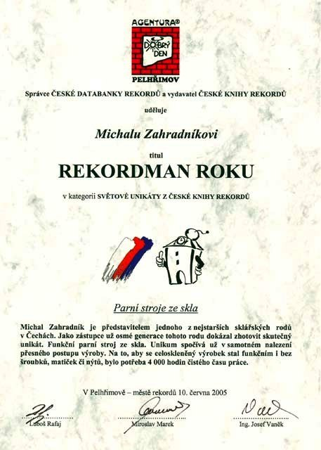

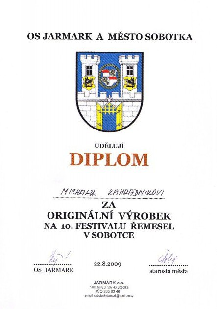

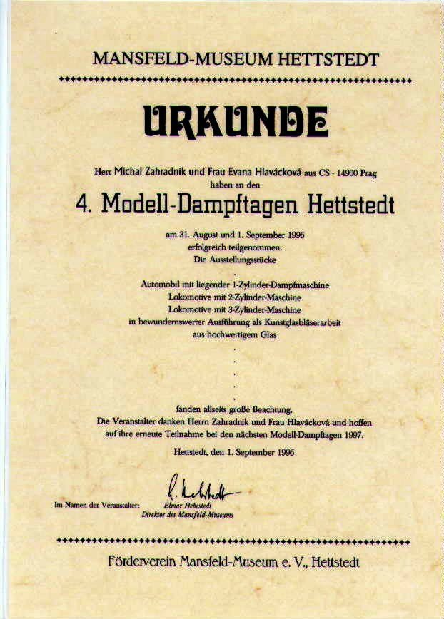

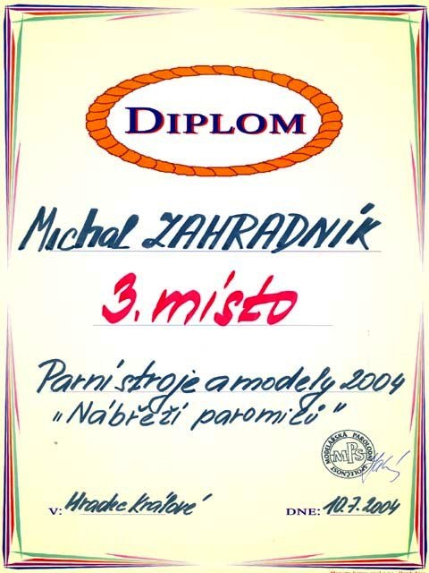

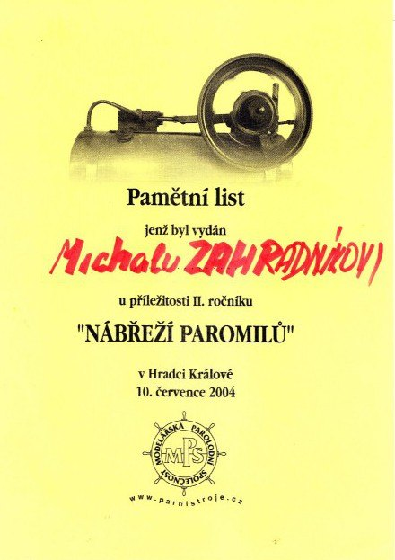

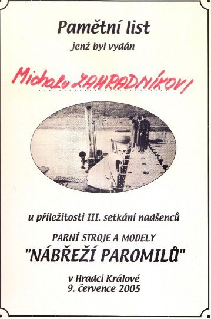

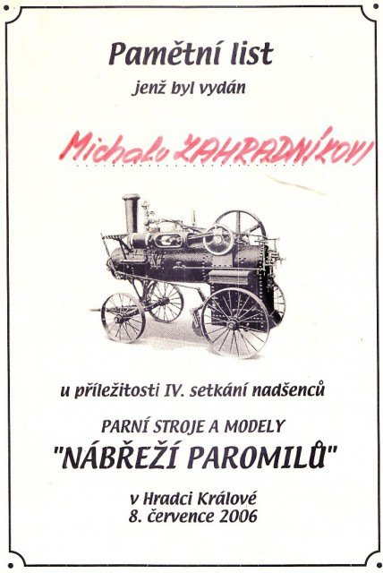

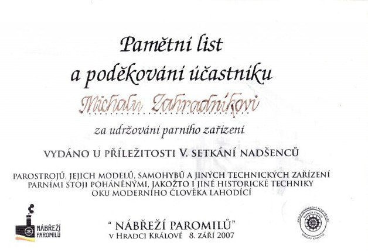

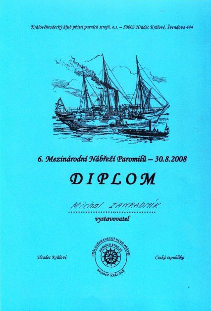

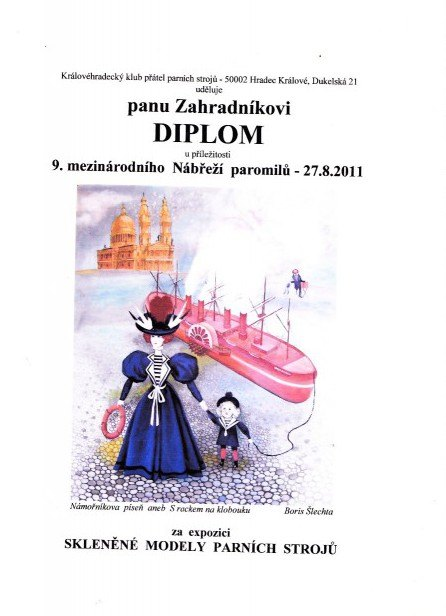

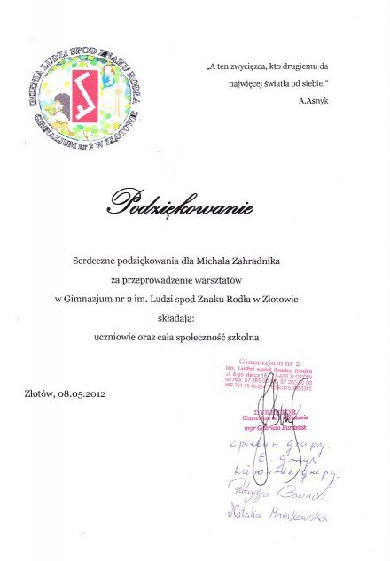
… z Boží vůle sklář…

Certifikáty, diplomy a pamětní listy z výstav a setkání u nás i v zahraničí.










